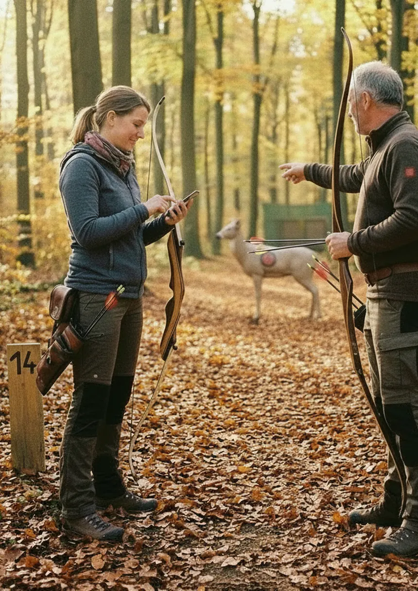
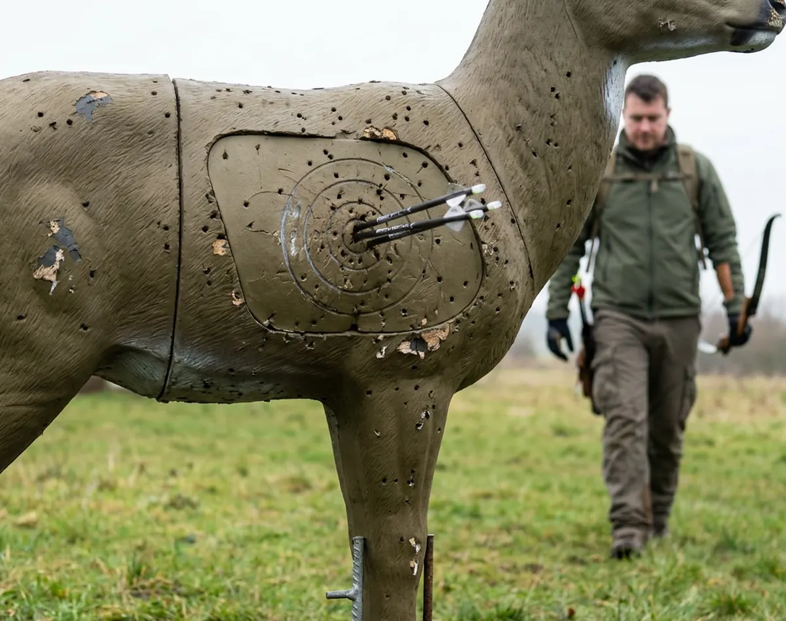
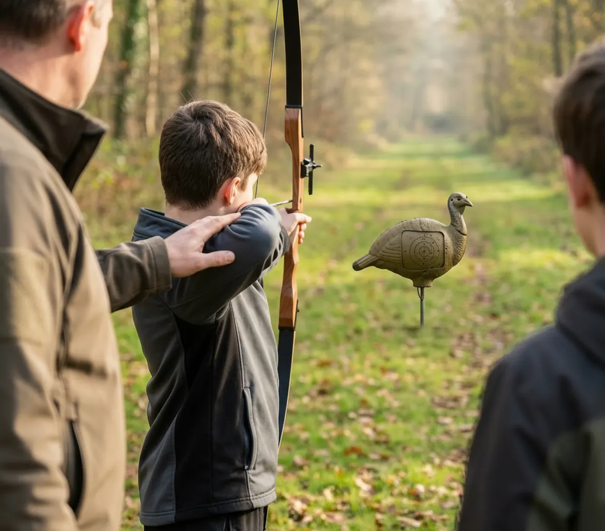

Il segnapunti che conosce il tuo regolamento
ArcTrail 3D riconosce il regolamento del tuo formato, calcola il punteggio giusto e funziona anche senza rete.
17 federazioni · 5 circuiti · 17 formati di gara · senza rete

Segni il giro col regolamento della tua federazione, freccia per freccia.
Punteggi, storico e andamento: quello che hai fatto davvero.
Allenamenti aperti, compagnie e altri arcieri.
Campi 3D e compagnie, cercando per zona.
Prepari la gara e la scheda di percorso. Iscrizioni e classifiche stanno arrivando.
In costruzione3D non significa una sola gara. 28 piazzole e due frecce nello Standard IFAA. 24 nel World Archery. Una sola freccia nell’IFAA Hunting Round. ArcTrail 3D conosce la differenza e applica il regolamento giusto.
ArcTrail 3D è un'app indipendente. Nessuna di queste federazioni la patrocina o la certifica.
Segni il giro anche quando la tacca sparisce. ArcTrail tiene il punteggio sul telefono e lo mette in salvo appena il segnale torna.
Zero Tacche di segnale servono per segnare una freccia

Media, migliore giro, bersagli tirati, come vai su ogni campo. Numeri tuoi, presi dai tuoi giri — nessuna previsione, nessun consiglio inventato.

Vedi chi si allena vicino a te, annunci il tuo turno e ti unisci a quello di qualcun altro. Poi vi trovate al campo.
Cerchi per zona e trovi le compagnie: dove sono, come si chiamano, chi apre gli allenamenti.
L’elenco copre Francia, Germania, Italia e Paesi Bassi, e i percorsi li descrivono le compagnie: trovi quelli che qualcuno ha scritto.
Chi tiene un campo può descriverlo, annunciare gli allenamenti, ricevere le segnalazioni di chi trova una sagoma rotta e scrivere ai soci. La parte gare è in prova con le prime compagnie.
Non c’è ancora tutta. Il cartellino c’è, ed è da lì che si costruisce il resto: un pezzo alla volta, e solo quando funziona davvero.
Il segnapunti con i regolamenti, il diario dei giri, gli allenamenti aperti. Senza rete.
I percorsi descritti dalle compagnie, le gare con le classifiche, il risultato che arriva a tutto il gruppo.
Un posto dove un arciere, in qualunque paese, trova dove si tira domenica.